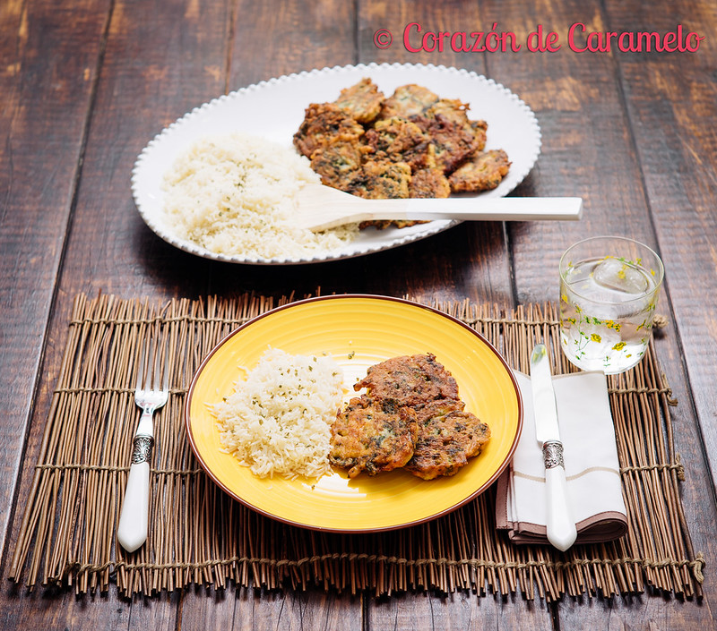

Me encanta probar platos tradicionales de otros países, igual me ocurre con la pastelería porque acabas dándote cuenta como las costumbres de cada lugar acaban creando una cultura gastronómica propia de cada país y eso ya de por sí es muy interesante para mí. Y si hay una gastronomía que me atrae y me encanta es duda alguna la argentina, supongo que tendrá mucho que ver que esté casada con un argentino, pero aún así he de decir que he probado dulces y platos de pasta, carne ó verdura en Argentina, que no los supera ningún otro de los que haya probado y este es el caso del plato que os traigo hoy, un plato que comía Luis cuando era pequeñito y que le hacía su abuela, así que cuando me pidió que se lo hiciera y tras conseguir la receta familiar gracias a que su tía me la facilitó, sentí una presión y una responsabilidad enorme, ya que de antemano pensaba que no iba a poder igualar la receta de una de las personas que más ha querido Luis en su vida…
El caso es que cuando Luis se llevó el primer bocado de una de las torrejas que acababa de sacar de la sartén a la boca, me dijo….»las has clavado, este es exactamente el sabor que recordaba de las torrejas de Argentina». Feliz de la vida decidí entonces que quería compartir esta fantástica receta con todos vosotros, porque considero que es una forma diferente de comer verdura, de hecho nuestros pequeños se las comieron casi sin respirar…
Las torrejas argentinas no tienen un plato equivalente en España, aunque el modo de prepararlas se asemeja un poco a nuestros buñuelos, lo cierto es que difieren mucho tanto en sabor como en textura ya que para empezar a las torrejas no se les añade ningún tipo de impulsor químico o levadura que es lo que hace que los buñuelos tengan una textura más bien aireada.
Las torrejas pueden además hacerse de un montón de ingredientes diferentes, por lo que nunca te cansas de comerlas. Pueden servirse como plato principal acompañadas de una ensalada de lechuga, tomate y cebolla, o también pueden ser el acompañamiento perfecto de un filete de ternera, una porción de pollo o cualquier carne que se te ocurra.
Las torrejas que he hecho yo hoy son de acelgas pero como os decía las podéis hacer de espinacas, coliflor e incluso de arroz.
Contenido de la receta
Comenzamos lavando muy bien las acelgas. No les cortaremos el tallo blanco (las pencas) más allá de la parte que veamos más fea. Ponemos una cacerola con agua y un poco de sal a calentar y cuando rompa a hervir, añadiremos las acelgas. Dejaremos que se cuezan durante 12 minutos aproximadamente. Las dejaremos escurriendo en un colador hasta que preparemos el resto de la receta.